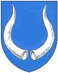

Antavla
63875275 Bosdatter Dyre

Far:
Bo Dyre (1250? - 1308?)
Född:
före 1281 Tubetorp, Smörum, Danmark.
Död:
före 1300 Saerslev, Själland, Danmark.
Barn med
63875274 Herluf Jacobsen Grubbe af Saerslev (1270? - >1316)
Barn:
Herlufsdatter Grubbe af Saerslev
Personhistoria
Årtal
Ålder
Händelse
<1281
Födelse före 1281 Tubetorp, Smörum, Danmark
<1300
Död före 1300 Saerslev, Själland, Danmark